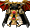

一般｜四重鎧甲｜天上－善屬性｜天上－惡屬性
名稱為橘色的是可以附魔的物品。另外，未鑑定名稱是該道具在未鑑定狀態下的名稱。
提供情報或編輯請求，請到情報提供公佈欄、編輯公佈欄。
一般
| 名稱 | 價格 | 限制 | 職業 | Wei | 取得方式 |
 女劍士服 女劍士服 | 400 | Lv1 | 戰修盜騎阿聖魔預吟 | 2 | 米魯里斯：雜貨店盧亞斯：鐵匠鋪盧亞斯：雜貨店斯歐米：雜貨店魔界村：雜貨店魯克西翁：雜貨店 |
| 能力 | AC-4 |
| 名稱 | 價格 | 限制 | 職業 | Wei | 取得方式 |
| 女劍士防衛者未鑑定名稱:戰鬥服 | 200 | Lv1 | 戰修盜騎阿聖魔預吟 | 2 | [庫娜]達伊特倫寶箱(深茶) |
| 能力 | AC-4、MC-1、STR+1 |
| 名稱 | 價格 | 限制 | 職業 | Wei | 取得方式 |
| 女劍士服 | 200 | Lv1 | 戰修盜騎阿聖魔預吟 | 6 | - |
| 能力 | AC-4 |
| 名稱 | 價格 | 限制 | 職業 | Wei | 取得方式 |
 長老女武神護甲 長老女武神護甲 | 1,000 | Lv1 | 戰修盜騎阿聖魔預吟 | 9 | Q:師父與弟子 |
| 能力 | AC-8、HP+100、SP+100 |
| 名稱 | 價格 | 限制 | 職業 | Wei | 取得方式 |
 戰士皮甲(女) 戰士皮甲(女) | 4,400 | Lv11 | 戰修盜騎阿聖魔預吟 | 5 | 米魯里斯：雜貨店盧亞斯：鐵匠鋪盧亞斯：雜貨店斯歐米：雜貨店魔界村：雜貨店魯克西翁：雜貨店 |
| 能力 | AC-9 |
| 名稱 | 價格 | 限制 | 職業 | Wei | 取得方式 |
| 戰鬥者拉姆帕蒂斯未鑑定名稱:戰鬥服 | 2,200 | Lv11 | 戰修盜騎阿聖魔預吟 | 4 |  寶箱(深茶) 寶箱(深茶) |
| 能力 | AC-8、MC-2、STR+1、CON+1 |
| 名稱 | 價格 | 限制 | 職業 | Wei | 取得方式 |
| 戰士皮甲(女) | 2,200 | Lv11 | 戰修盜騎阿聖魔預吟 | 8 | 庫娜摩斯戰士 |
| 能力 | AC-9 |
| 名稱 | 價格 | 限制 | 職業 | Wei | 取得方式 |
 女主角皮甲 女主角皮甲 | 16,600 | Lv21 | 戰修盜騎阿聖魔預吟 | 9 | 盧亞斯：鐵匠鋪 |
| 能力 | AC-15 |
| 名稱 | 價格 | 限制 | 職業 | Wei | 取得方式 |
| 女英雄壁壘未鑑定名稱:鎧甲 | 8,300 | Lv21 | 戰修盜騎阿聖魔預吟 | 6 | 寶箱(淺茶) |
| 能力 | AC-13、MC-3、STR+2、CON+1、DEX+1 |
| 名稱 | 價格 | 限制 | 職業 | Wei | 取得方式 |
| 女主角皮甲 | 8,300 | Lv21 | 戰修盜騎阿聖魔預吟 | 12 | [梅恩德哥拉]諾肯彩券 |
| 能力 | AC-15 |
| 名稱 | 價格 | 限制 | 職業 | Wei | 取得方式 |
| 侍從皮甲(女) | 10 | Lv21 | 戰修盜騎阿聖魔預吟 | 9 | Q:百鬼夜行二十一之鬼～四十之鬼 |
| 能力 | AC-21、MC-13、VD:7天 |
| 名稱 | 價格 | 限制 | 職業 | Wei | 取得方式 |
| 戰鬥板甲 | 62,000 | Lv31 | 戰修盜騎阿聖魔預吟 | 11 | 盧亞斯：鐵匠鋪、 絨毛鼠、奈德帕姆 絨毛鼠、奈德帕姆 |
| 能力 | AC-22 |
| 名稱 | 價格 | 限制 | 職業 | Wei | 取得方式 |
| 戰鬥防護未鑑定名稱:鎧甲 | 31,000 | Lv31 | 戰修盜騎阿聖魔預吟 | 8 | 科特摩[羅德哥布林]寶箱(淺茶) |
| 能力 | AC-19、MC-5、STR+2、CON+2、DEX+1 |
| 名稱 | 價格 | 限制 | 職業 | Wei | 取得方式 |
| 海盜皮甲(女) | 10 | Lv31 | 戰修盜騎阿聖魔預吟 | 11 | Q:百鬼夜行 |
| 能力 | AC-29、MC-18、VD:7天 |
| 名稱 | 價格 | 限制 | 職業 | Wei | 取得方式 |
| 戰鬥板甲 | 31,000 | Lv41 | 戰修盜騎阿聖魔預吟 | 16 | 波托彩券、絨毛鼠 |
| 能力 | AC-22 |
| 名稱 | 價格 | 限制 | 職業 | Wei | 取得方式 |
 女武神板甲 女武神板甲 | 164,000 | Lv51 | 戰修盜騎阿聖魔預吟 | 14 | 盧亞斯：鐵匠鋪 |
| 能力 | AC-29 |
| 名稱 | 價格 | 限制 | 職業 | Wei | 取得方式 |
| 華爾奇麗騎乘未鑑定名稱:重裝鎧甲 | 82,000 | Lv51 | 戰修盜騎阿聖魔預吟 | 11 |  寶箱(紅)、布雷斯斯雷夏魔瓜(OP附魔) 寶箱(紅)、布雷斯斯雷夏魔瓜(OP附魔) |
| 能力 | AC-25、MC-7、STR+3、CON+2、DEX+2 |
| 名稱 | 價格 | 限制 | 職業 | Wei | 取得方式 |
| 日耳曼尼亞皮背心 | 10 | Lv51 | 戰修盜騎阿聖魔預吟 | 14 | Q:百鬼夜行 |
| 能力 | AC-37、MC-21、VD:7天 |
| 名稱 | 價格 | 限制 | 職業 | Wei | 取得方式 |
| 女武神板甲 | 82,000 | Lv61 | 戰修盜騎阿聖魔預吟 | 22 |  彩券、萬聖節魔瓜、 彩券、萬聖節魔瓜、 賽可魔瓜、 賽可魔瓜、 波特波特 波特波特 |
| 能力 | AC-29 |
| 名稱 | 價格 | 限制 | 職業 | Wei | 取得方式 |
| 華爾奇麗防護 | 5,000 | Lv61,FLv5 | 戰修盜騎阿聖魔預吟 | 12 | Q:扭曲命運的武器 |
| 能力 | AC-33、MC-15、HP20、SP20 |
| 備註 | 露卡的禮物。強化了從長老領主處得到的衣服能力。 |
| 名稱 | 價格 | 限制 | 職業 | Wei | 取得方式 |
| 女王鎧甲 | 484,000 | Lv71 | 戰修盜騎阿聖魔預吟 | 19 | 伊卡洛斯：鐵匠鋪 |
| 能力 | AC-37 |
| 名稱 | 價格 | 限制 | 職業 | Wei | 取得方式 |
| 女王護衛未鑑定名稱:重裝鎧甲 | 242,000 | Lv71 | 戰修盜騎阿聖魔預吟 | 14 | 雷比亞：鐵匠鋪、寶箱(金) |
| 能力 | AC-32、MC-8、STR+4、CON+3、DEX+2 |
| 名稱 | 價格 | 限制 | 職業 | Wei | 取得方式 |
| 女王鎧甲 | 242,000 | Lv71 | 戰修盜騎阿聖魔預吟 | 28 | 彩券 |
| 能力 | AC-37 |
| 名稱 | 價格 | 限制 | 職業 | Wei | 取得方式 |
| 亮片禮服 | 50,000 | Lv71 | 戰修盜騎阿聖魔預吟 | 19 | 格蘭德派斯(紅) |
| 能力 | AC-40 |
| 備註 | 麻痺防禦(PCount:80) |
| 名稱 | 價格 | 限制 | 職業 | Wei | 取得方式 |
| 女武神卡扎克 | 10 | Lv71 | 戰修盜騎阿聖魔預吟 | 19 | Q:百鬼夜行 |
| 能力 | AC-45、MC-24、VD:7天 |
| 名稱 | 價格 | 限制 | 職業 | Wei | 取得方式 |
 守護者鎖子甲 守護者鎖子甲 | 10,000,000 | Lv81 | 戰修盜騎阿聖魔預吟 | 22 | 卡雷瓦拉：鐵匠鋪 |
| 能力 | AC-45 |
| 名稱 | 價格 | 限制 | 職業 | Wei | 取得方式 |
| 斯圖亞德魔法鎖甲 | 100,000 | Lv81 | 戰修盜騎阿聖魔預吟 | 22 | ［幽靈弗里克爾］雪魔劍士(藍) |
| 能力 | AC-36、MC-10、STR+5、CON+4、WIS+1、DEX+2 |
| 名稱 | 價格 | 限制 | 職業 | Wei | 取得方式 |
| 守護者鎖子甲 | 242,000 | Lv81 | 戰修盜騎阿聖魔預吟 | 22 | 死亡天使三角龍 |
| 能力 | AC-45 |
| 名稱 | 價格 | 限制 | 職業 | Wei | 取得方式 |
| 殺戮鎧甲 | 20,000,000 | Lv91 | 戰修盜騎阿聖魔預吟 | 24 | 盧亞斯：鐵匠鋪 |
| 能力 | AC-50 |
| 名稱 | 價格 | 限制 | 職業 | Wei | 取得方式 |
| 索德馬斯特鎖甲 | 200,000 | Lv91 | 戰修盜騎阿聖魔預吟 | 24 | 冰霜貴族[阿波莉娜]艾尼斯泰米 |
| 能力 | AC-40、MC-12、STR+6、CON+5、WIS+1、DEX+2 |
| 名稱 | 價格 | 限制 | 職業 | Wei | 取得方式 |
| 劍士裝束 | 50,000 | Lv91,FLv21 | 戰修盜騎阿聖魔預吟 | 22 |  冰霜貴族、九十九之鬼 冰霜貴族、九十九之鬼 |
| 能力 | AC-45 |
| 備註 | 麻痺防禦(PCount:80) |
| 名稱 | 價格 | 限制 | 職業 | Wei | 取得方式 |
| 女武神閃耀 | 10 | Lv91,FLv41 | 戰修盜騎阿聖魔預吟 | 22 | Q:百鬼夜行九十八之鬼 |
| 能力 | AC-50、MC-26、VD:7天 |
| 名稱 | 價格 | 限制 | 職業 | Wei | 取得方式 |
| 奧斯提亞戰鬥者鎧甲 | 300,000 | Lv91,FLv21 | 戰修盜騎阿聖魔預吟 | 25 | Q:雷皮翁攻略 |
| 能力 | AC-43、MC-20 |
| 備註 | 支給給最優秀船員的榮耀之衣。據說能給海軍無限的榮譽，給海盜無限的智慧的衣裝 |
| 名稱 | 價格 | 限制 | 職業 | Wei | 取得方式 |
| 迪洛佐戰鬥者鎧甲 | 300,000 | Lv95,FLv25 | 戰修盜騎阿聖魔預吟 |  船長拉爾普 船長拉爾普 | |
| 能力 | AC-46、MC-22、HP+30、SP+30 |
| 備註 | 據說是歷史上最可怕的海盜團的衣服。到現在看到這件衣服仍會感到恐懼。 |
| 名稱 | 價格 | 限制 | 職業 | Wei | 取得方式 |
| 奴隸女戰士鎖甲 | 300,000 | Lv95,FLv35 | 戰修盜騎阿聖魔預吟 | 27 | Q:火龍的地城 |
| 能力 | AC-48、MC-25、STR+5、HP+100、SP+100 |
| 備註 | 中毒防禦(PCount:50)封印克里莫拉克夏的證明。可以用火龍之鱗強化。 |
| 名稱 | 價格 | 限制 | 職業 | Wei | 取得方式 |
| 奴隸女戰士鎖甲 | - | Lv95,FLv35 | 戰修盜騎阿聖魔預吟 | 21 | Q:火龍升級 |
| 能力 | AC-48、MC-25、STR+5、HP+100、SP+100+(HP0~10、ADDown0~5、MDDown0~5) |
| 備註 | 中毒防禦(PCount:50)封印克里莫拉克夏的證明。以火龍之鱗強化後的型態。 |
| 名稱 | 價格 | 限制 | 職業 | Wei | 取得方式 |
| 迪捷雷德鎖甲 | 1,358,000 | Lv95,FLv35 | 戰修盜騎阿聖魔預吟 | 29 | Q:赫爾西翁製造 |
| 能力 | AC-49、MC-33、HP+120、SP+160 |
| 備註 | 據說是反抗神的天使們所穿的鎧甲 |
| 名稱 | 價格 | 限制 | 職業 | Wei | 取得方式 |
| 蒂亞雷德鎖甲 | 1,750,000 | Lv97,FLv45 | 戰修盜騎阿聖魔預吟 | 30 | Q:赫爾西翁升級 |
| 能力 | AC-52、MC-34、HP+150、SP+170 |
| 備註 | 強化迪捷雷德鎖甲的鎧甲。擁有卓越的防禦能力。 |
| 名稱 | 價格 | 限制 | 職業 | Wei | 取得方式 |
 鮮血與玫瑰 鮮血與玫瑰 | 10 | Lv99,FLv61 | 戰修盜騎阿聖魔預吟 | 24 | Q:百鬼夜行 |
| 能力 | AC-53、MC-28、HP+100、SP+100 |
| 備註 | 別名？大師板甲(2009/10/29) |
| 名稱 | 價格 | 限制 | 職業 | Wei | 取得方式 |
| 標本 | 10 | Lv99,FLv61 | 戰修盜騎阿聖魔預吟 | 24 | 加普 |
| 能力 | AC-53、MC-28、HP+100、SP+100 |
泰特拉鎧甲
| 名稱 | 價格 | 限制 | 職業 | Wei | 取得方式 |
 泰特拉女戰士服 泰特拉女戰士服 | 20,000 | Lv1 | 戰修盜騎阿聖魔預吟 | 0 | Q:四重鎧甲 |
| 能力 | AC-13、MC-12、AAR+6 |
| 備註 | [不可轉讓][不可放置地面]以古代文明失落的物質製成的職業服。沒有重量，可以變形為自己想要的形狀 |
| 形狀變化 | Lv2 | Lv3 | Lv4 | Lv5 | Lv6 | Lv7 | Lv8 |
| 名稱 | 價格 | 限制 | 職業 | Wei | 取得方式 | | |
| 泰特拉女戰士服AG | 200,000 | Lv1 | 戰修盜騎阿聖魔預吟 | 0 | Q:四重鎧甲 | | |
AC-27、MC-24、AAR+12
備註：[不可轉讓][不可放置地面]以古代文明失落的物質製成的職業服。沒有重量，可以變形為自己想要的形狀
| 形狀變化 | Lv2 | Lv3 | Lv4 | Lv5 | Lv6 | Lv7 | Lv8 |
| 名稱 | 價格 | 限制 | 職業 | Wei | 取得方式 | | |
| 泰特拉女戰士服UG | 2,000,000 | Lv1 | 戰修盜騎阿聖魔預吟 | 0 | Q:四重鎧甲 | | |
AC-45、MC-40、AAR+20
備註：[不可轉讓][不可放置地面]以古代文明失落的物質製成的職業服。沒有重量，可以變形為自己想要的形狀
| 形狀變化 | Lv2 | Lv3 | Lv4 | Lv5 | Lv6 | Lv7 | Lv8 |
天上－善屬性
| 名稱 | 價格 | 限制 | 職業 | Wei | 取得方式 |
| 帕爾塞斯魯西爾 | 100,000 | Lv91,FLv31TLv1,BLv1 | 戰修盜騎阿聖魔預吟 | 26 | 斯坎達倫3 |
| 能力 | [4階段封印時]AC-49、MC-26、HP+60、SP+60 |
| 備註 | 帕爾塞斯貝殼寶珠3個可解放1階段 |
| 名稱 | 價格 | 限制 | 職業 | Wei | 取得方式 |
| 帕爾塞斯魯西爾 | 100,000 | Lv91,FLv31TLv11,BLv11 | 戰修盜騎阿聖魔預吟 | 26 |  安德拉斯 安德拉斯 |
| 能力 | AC-49、MC-26、HP+140、SP+140 |
| 備註 | 封印已解除的帕爾塞斯盧西爾 |
帕爾塞斯盧西爾-升級
| 1階段 | 2階段 | 3階段 | 4階段 | 5階段 | 附魔值 |
| 茶 |  柳橙 柳橙 | 黃色 | 無法升級 | 無法升級 | RAC1～3 |
| 名稱 | 價格 | 限制 | 職業 | Wei | 取得方式 |
| 克修倫盧西爾 | 200,000 | Lv93,FLv41TLv31,BLv31 | 戰修盜騎阿聖魔預吟 | 28 | 歐佩爾3 |
[4階段封印時]AC-50、MC-29、HP+70、SP+70
備註：克修倫貝殼寶珠3個可解放1階段
| 名稱 | 價格 | 限制 | 職業 | Wei | 取得方式 |
| 克修倫盧西爾 | 200,000 | Lv93,FLv41TLv41,BLv41 | 戰修盜騎阿聖魔預吟 | 28 | - |
| 能力 | AC-50、MC-29、HP+150、SP+150 |
| 備註 | 封印已解除的克修倫盧西爾 |
| 名稱 | 價格 | 限制 | 職業 | Wei | 取得方式 |
| 克修倫盧西爾 | 2000,000 | Lv93,FLv41TLv41,BLv41 | 戰修盜騎阿聖魔預吟 | 28 | 天空千里行 |
| 能力 | AC-50、MC-29、STR+1、HP+170、SP+170、VD:7天 |
克修倫盧西爾-升級
| 1階段 | 2階段 | 3階段 | 4階段 | 5階段 | 附魔值 |
| RAC1～3 | | | | | |
| 名稱 | 價格 | 限制 | 職業 | Wei | 取得方式 |
| 盧米納盧西爾 | 300,000 | Lv95,FLv51TLv61,BLv61 | 戰修盜騎阿聖魔預吟 | 30 | 格亨納2樓監獄 |
[4階段封印時]AC-51、MC-32、HP+80、SP+80
備註：盧米納貝殼寶珠3個可解放1階段
| 名稱 | 價格 | 限制 | 職業 | Wei | 取得方式 |
| 盧米納盧西爾 | 300,000 | Lv95,FLv51TLv71,BLv71 | 戰修盜騎阿聖魔預吟 | 30 |  緹亞潔 緹亞潔 |
| 能力 | AC-51、MC-32、HP+160、SP+160 |
| 備註 | 封印已解除的盧米納盧西爾 |
盧米納盧西爾-升級
| 1階段 | 2階段 | 3階段 | 4階段 | 5階段 | 附魔值 |
| RAC1～3 | | | | | |
| 名稱 | 價格 | 限制 | 職業 | Wei | 取得方式 |
| 利赫涅盧西爾 | 400,000 | Lv97,FLv61TLv81,BLv81 | 戰修盜騎阿聖魔預吟 | 32 | |
[4階段封印時]AC-52、MC-35、HP+90、SP+90
備註：利赫涅貝殼寶珠3個可解放1階段
| 名稱 | 價格 | 限制 | 職業 | Wei | 取得方式 |
| 利赫涅盧西爾 | 400,000 | Lv97,FLv61TLv91,BLv91 | 戰修盜騎阿聖魔預吟 | 32 | |
| 能力 | - |
利赫涅盧西爾-升級
天上－惡屬性
| 名稱 | 價格 | 限制 | 職業 | Wei | 取得方式 |
 斯坎達倫菲納克斯 | 100,000 | Lv91,FLv31TLv1,BLv1 | 戰修盜騎阿聖魔預吟 | 26 | 帕爾塞斯3 |
| 能力 | [4階段封印時]AC-49、MC-26、HP+60、SP+60 |
| 備註 | 斯堪達隆貝殼寶珠3個可解放1階段 |
| 名稱 | 價格 | 限制 | 職業 | Wei | 取得方式 |
| 斯坎達倫菲納克斯 | 100,000 | Lv91,FLv31TLv11,BLv11 | 戰修盜騎阿聖魔預吟 | 26 | |
| 能力 | AC-49、MC-26、HP+140、SP+140 |
| 備註 | 封印已解除的斯堪達隆菲納克斯 |
斯堪達隆菲納克斯-升級
| 1階段 | 2階段 | 3階段 | 4階段 | 5階段 | 附魔值 |
| 無法升級 | 無法升級 | RAC1～3 | | | |
| 名稱 | 價格 | 限制 | 職業 | Wei | 取得方式 |
| 奧菲爾菲納克斯 | 200,000 | Lv93,FLv41TLv31,BLv31 | 戰修盜騎阿聖魔預吟 | 28 | 克修倫3吉恩特(茶) |
[4階段封印時]AC-50、MC-29、HP+70、SP+70
備註：奧菲爾貝殼寶珠3個可解放1階段
| 名稱 | 價格 | 限制 | 職業 | Wei | 取得方式 |
| 奧菲爾菲納克斯 | 200,000 | Lv93,FLv41TLv41,BLv41 | 戰修盜騎阿聖魔預吟 | 28 | |
| 能力 | AC-50、MC-29、HP+150、SP+150 |
| 備註 | 封印已解除的奧菲爾菲納克斯 |